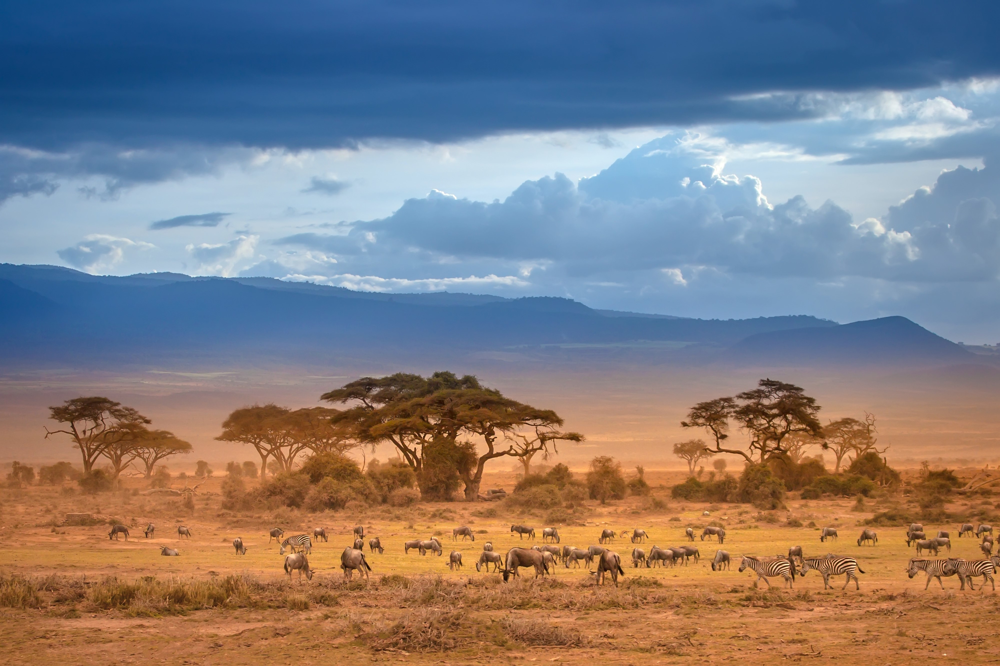
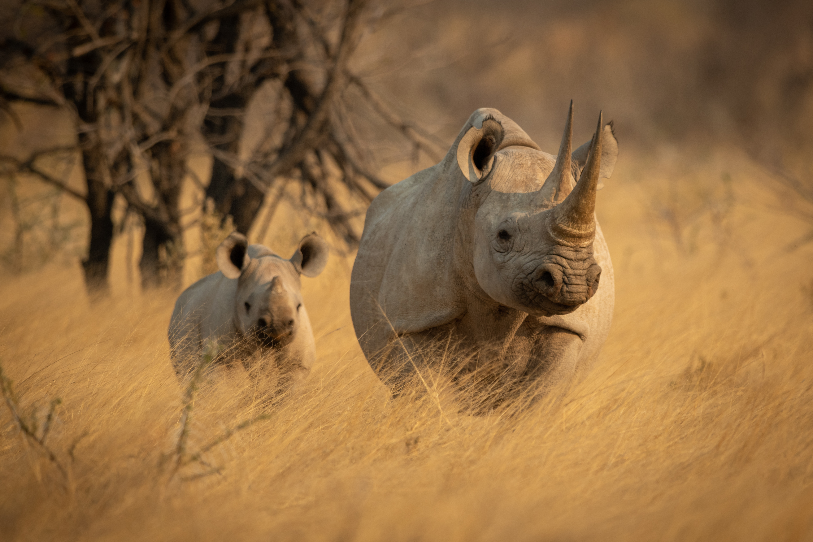
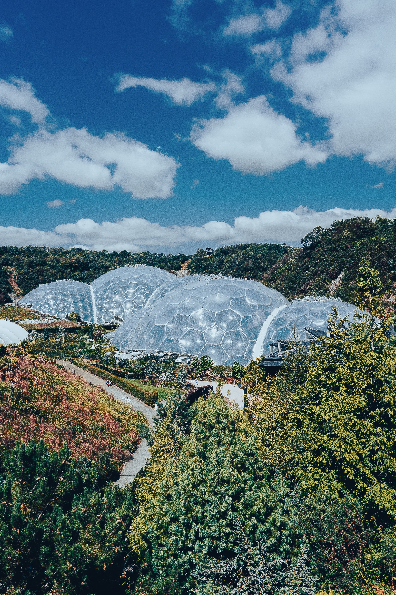
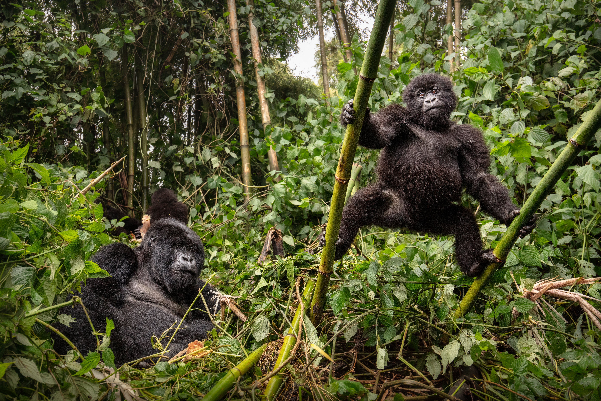
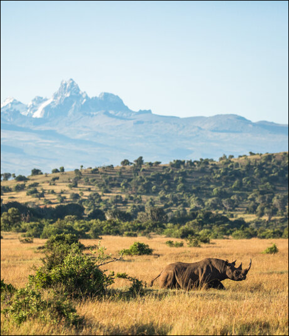
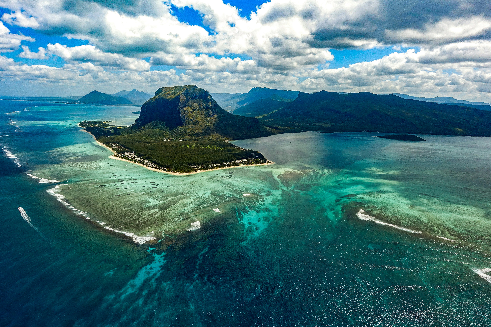
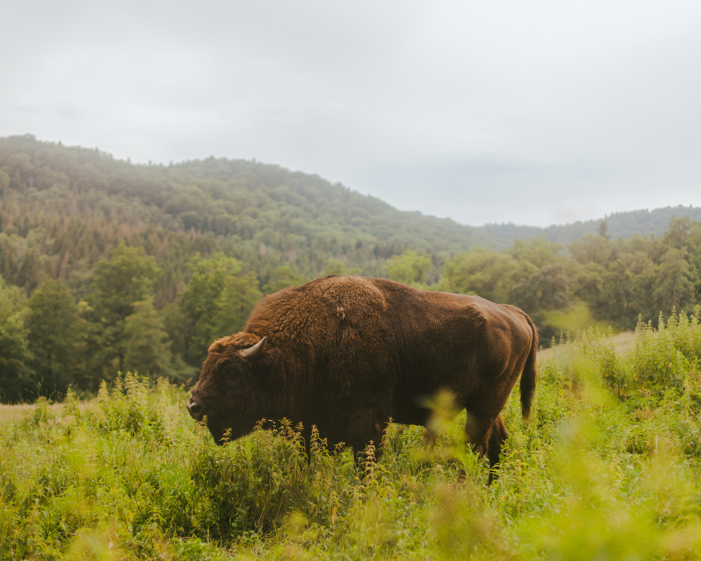
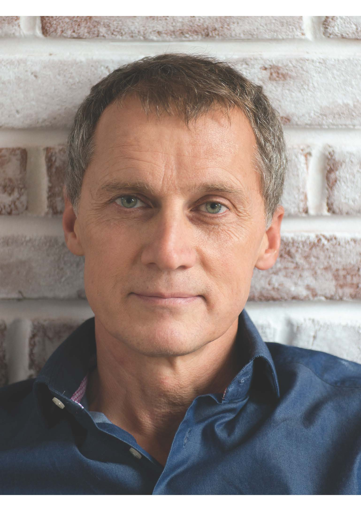

We advise conservation organisations and investors on how to attract and deploy capital for nature, turning ambition into action.

Conservation Capital is a specialist nature finance advisory firm focused on closing the nature finance gap. For over 20 years we have helped conservation organisations access capital and investors find opportunities that deliver both financial returns and nature impact.
Our team combines deep financial expertise with on-the-ground conservation experience, giving us a rare ability to operate across both worlds and build successful, progressive nature financing solutions.
The barrier to closing the nature finance gap is not a shortage of capital. It is a shortage of credible, investment-ready structures. That is what we build.
Our MissionThe world needs to invest $1.15 trillion per year to halt biodiversity loss. Today, less than $208 billion flows to nature annually, and over 80% of that comes from stretched public budgets.
Private capital has the scale to close the gap, but remains largely on the sidelines. The barrier is not a shortage of capital. It is a shortage of credible, investment-ready structures.
Conservation Capital's mission is to design and implement progressive nature financing mechanisms that close this gap, for good.
See How We Do ItAs early pioneers in nature finance, we have spent over two decades navigating one of the most complex challenges in conservation: bridging the gap between the boardrooms where financing decisions are made and the frontier landscapes where capital must be deployed.
Capital seeking financial returns and nature-positive impact at scale
Designing and implementing financing mechanisms that connect capital to conservation
Nature-positive projects seeking increased and more sustainable funding
The nature market is complex, fast-moving, and often opaque. We help investors identify, evaluate, and execute on opportunities that generate both financial returns and measurable nature impact.
We source and structure investment-ready opportunities, manage the transaction process, and embed post-investment monitoring systems that demonstrate real-world ecological outcomes.
Most conservation organisations have extraordinary projects but lack the financial structures to attract capital at scale. We bridge that gap, turning conservation ambition into bankable investment propositions. We do this through the application of our Nature Finance Activation Process.
We guide you all the way from concept to close, structuring the deal, engaging investors, managing due diligence, and establishing post-close monitoring systems that protect your project's ecological integrity.
Our core offering is the Nature Finance Activation (NFA) Process: a rigorous end-to-end framework for identifying, designing, and executing nature finance mechanisms. Developed and refined through more than 250 professional engagements across over 50 countries over two decades, the NFA transforms conservation ambition into bankable investment opportunities.
Establishing the foundations for a viable, investable strategy through clarifying goals, assessing the enabling environment, and evaluating counterparty readiness through our proprietary Resilience+ framework.
Identifying and selecting the most appropriate nature finance mechanisms for each context using a structured three-filter methodology drawn from our extensive finance mechanism long list.
Converting the selected mechanism(s) into a fully structured financial product that is legally robust, ecologically integrated, and tested against investor expectations prior to capitalisation.
Converting investor interest into committed capital by managing engagement, due diligence, transaction processes, and post-close monitoring.
We evaluate the full range of nature-linked financing instruments across five core categories, structuring the optimal combination for each context and counterparty.
e.g. Mandatory Carbon Offsets
e.g. Philanthropic Funding
e.g. Biodiversity Credits
e.g. Conservation Bonds
e.g. Nature Tourism Investment
Conservation Capital has completed projects around the world, developing nature financing mechanisms and nature-based businesses for conservation organisations and financiers across five continents, building unparalleled experience in what actually works on the ground.

Click any project to read the full case study.







 - NFM.jpg)

Clients & Partners
Our team includes pioneers in conservation finance, former investment bankers, ecologists, and entrepreneurs, united by a single mission: closing the nature finance gap.



Whether you're a conservation organisation seeking investment or an investor looking for nature-positive opportunities, we'd love to start a conversation.